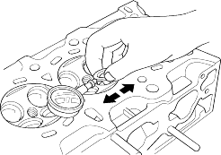
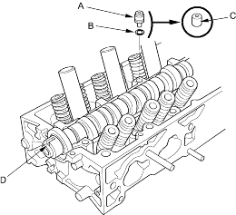
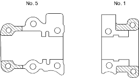

- Slide the valve out of its guide about 10mm, then measure the guide-to-stem clearance with a dial indicator while rocking the stem in the direction of normal thrust (wobble method).
- If the measurement exceeds the service limit, recheck it using a new valve.
- If the measurement is now within the service limit, reassemble using a new valve.
- If the measurement with a new valve still exceeds the service limit, go to step 2.
Intake Valve Stem-to-Guide Clearance:
Standard (New):0.04 - 0.10 mm
(0.002 - 0.004 in.)
Service Limit:0.16 mm (0.006 in.)
Exhaust Valve Stem-to-Guide Clearance:
Standard (New):0.10 - 0.16 mm
(0.004 - 0.006 in.)
Service Limit:0.22 mm (0.009 in.)

- Subtract the O.D. of the valve stem, measured with a micrometer, from the I.D. of the valve guide, measured with an inside micrometer or ball gauge.
Take the measurements in 3 places along the valve stem and three places inside the valve guide.
The difference between the largest guide measurement and the smallest stem measurement should not exceed the service limit.
Intake Valve Stem-to-Guide Clearance:
Standard (New):0.02 - 0.05 mm
(0.0008 - 0.0020 in.)
Service Limit:0.08 mm (0.003 in.)
Exhaust Valve Stem-to-Guide Clearance:
Standard (New):0.05 - 0.08 mm
(0.0020 - 0.0031 in.)
Service Limit:0.11 mm (0.004 in.)
- After wiping down the camshaft and the journals in the cylinder head, lubricate both surfaces and install the camshaft.
- Clean and install the oil control orifice (A) with a new O-ring (B) (D17A2, D17A5, D17A9 engines).

- Clean and install the oil control orifice (C) (D17A8 engine).
- Turn the camshaft until its keyway (D) is facing up (No. 1 piston TDC).
- Loosen all the valve adjusting screws.
- Apply liquid gasket to the head mating surface (shaded areas) of the No. 1 and No. 5 camshaft holders.
